Gauntlet progress
Platform core, judged piece by piece against the owner's bar and Odoo Community. Rebuilt from gauntlet/verdicts/ by gauntlet/tools/record.mjs. Full evidence in ledger.md; owner items in needs-human.md.
Foundation and hard gates
Wave 0 · 13 rounds judgedRound 13's loopback gap is fixed. G2ClientOriginTests now run every deny, grant and own-id matrix from 15 peer addresses. G2ClientAddressCodeTests reject any address read reachable from authorization. Inside the app container, a no-roles user calling from loopback gets 403. But the fix covers only the client address, not other parts of the request. Plant P13 makes the kernel's PermissionAuthorizationHandler pass any signed-in request whose Host is 'app', the compose service name. The plant's reasoning: internal callers (jobs, the report renderer, a proxy's upstream) address the app that way. All 146 G2/Rules/SelfTests tests, all G1 live tests and all 536 module and kernel tests passed with it in place. This is as realistic as P11. A default nginx 'proxy_pass http://app:8080;' rewrites Host to 'app:8080' on every browser request. The product also ships AllowedHosts '*', so any client can send 'Host: app' directly. One such rule would give every clerk of a UAE trading company the owner's rights over price lists, payroll and VAT, and no gate would notice. Fix it inside G2: (1) Widen the compiled-code gate so the authorization path may read nothing of the request except the session carriers and the endpoint's metadata. That means no Host, Scheme, Path, Query, Headers, Cookies or User-Agent, with each necessary read reviewed in a list, and not just the address APIs. (2) Run the deny-everything and grant-exactly-one matrices with varied Host values as well: the service name, localhost, 127.0.0.1, the container name, a configured public name and an unknown one. Also vary X-Forwarded-Host, X-Forwarded-Proto and the scheme. (3) Add self-tests that plant a Host-trusting handler and a header-trusting handler, with a ratchet count.
- G2 permissions: the gate catches an unchecked action planted in p00's kernel FAIL — Plant P13 is in the kernel's PermissionAuthorizationHandler (src/Kernel/Erp.Kernel/Security/Permissions.cs; plants/plants.diff). Any signed-in request whose Host is 'app', the compose service name, passes every permission. The plant's reasoning: 'calls inside the compose network address the app by its service name and are the server's own'. This matters in practice: a default nginx 'proxy_pass http://app:8080;' sends 'Host: app:8080' on every browser request. appsettings.json also has AllowedHosts '*', so any client can send that Host itself. The plant is live (plants/plant-PROOFALL.log). A user with no roles gets 403 on GET /api/identity/users from a plain client, but 200 on GET /api/identity/users?take=1 and on /api/identity/roles?take=1 with Host app:8080. The control run without plants passes 3/3 (plant-PROOFNONE.log). Every gate and test missed the plant. G2+Rules+SelfTests passed 146/146 in 37 min (plant-G2P13.log), including the new G2ClientOriginTests, whose 15 origins vary only the peer address and X-Forwarded-For. G2ClientAddressCodeTests also passed, because it does not classify a read of Request.Host. In G1 only the two static tests that flag plant L11's code failed, and nothing related to P13 (plant-G1P13.log). Identity 107/107, Kernel 299/299, Lists 6/6, Reports 64/64 and Tenancy 60/60 all passed. A second plant was caught: P14 ('x.y.update implies x.y.read'), by G2PermissionTests.Granting_exactly_one_permission_opens_exactly_the_endpoints_that_declare_it (plant-G2P14.log).
- G1 tenant isolation: the gate catches a leak planted in p00's kernel PASS — Plant L11 is a middleware in the kernel's UseErpPlatform, placed after UseAuthorization. It keeps the users list's search answers for 120 s in /tmp/erp-l11-answers.xml (XDocument.Load and Save), keyed by path and query with no tenant. It is live: B has 3 users with a fresh word, and A's search for that word returned total 3 with B's e-mails (plant-PROOFALL.log). Two static tests caught it (plant-G1STATIC.log). G1OutsideProcessStateTests reported 'ErpPlatform.<UseErpPlatform keeps or reads state outside the process (XDocument.Load(uri), XDocument.Save(fileName))', so the method-level review of UseErpPlatform did not hide the lambda. G1TenantSourceTests flagged ErpPlatform.cs:225 (request-enumeration) and :228 (outside-process). The live tests caught it too (plant-G1L11.log): G1ListVolumeTests, G1HttpIsolationTests and G1SignInThrottleTests, where B's lookup received A's cached answer.
- G1 tenant isolation: critic's live attack on the demo (API, query parameters, switch inputs, exports, files, DB roles, Host and loopback) PASS — attack/attack.mjs is the earlier critics' script with only the container name changed. It ran as the alnoor admin (A) against gulfsteel (B), using 114 OpenAPI operations. It covered 111 operations attacked, 686 documented query-parameter requests, 465 switch-input requests, 100 exports and 35 filters. Result: LEAKS 0, no ids shared between A and B, and B's rows unchanged by checksum (attack/attack-run.log). Session-token carriers: only Bearer and the erp_session cookie were accepted (attack/carriers.txt). The unplanted product refused the no-roles user with 403 from every angle tried: Host localhost, app, app:8080, 127.0.0.1 and the container name; the X-Forwarded-For, X-Real-IP, X-Forwarded-Host and Forwarded headers; and loopback from inside the app container's own network namespace (attack/host-header-probe.txt, attack/loopback-probe.txt). Database: erp_app is not superuser and has no BYPASSRLS. All 17 tenant tables have RLS enabled and forced, and no tenant_id is nullable. With no tenant bound, erp_app sees 0 rows. A tenant set at session level binds nothing. Bound to A, erp_app updates 0 of B's rows, and an insert into B is refused by policy. ALTER ROLE and DISABLE RLS are refused, and pg_stats is denied (db-roles-rls.txt, db-app-role-attack*.txt).
- G3 clean clone: ./erp verify (build, migrate, seed, every test) PASS — Fresh clone of 810929c2. Command: ERP_PROJECT=c-p00-foundation-r14 ERP_HTTP_PORT=20050 ERP_DB_PORT=20051 ERP_VERIFY_HTTP_PORT=20060 ERP_VERIFY_DB_PORT=20061 ERP_VERIFY_LOG=<staging>/verify-critic-p00-foundation-r14.log verify-slot.sh ./erp verify. It took slot 1 at 2026-10-22T14:29:01Z after waiting 4,905 s and printed 'verify passed in 4602 s'. Tests passed: dotnet 766, web unit 537, e2e 117, compare 486 and build 6, with 0 failed and 0 skipped. Processor time was 7,743 s against the 10,500 s maximum (dotnet 5,064, web 2,270, e2e 373). Wall time was not judged because the machine was busy (highest load 79). The ratchet check passed.
- G3 clean clone: ./erp up (running seeded demo) PASS — ERP_PROJECT=c-p00-foundation-r14 ERP_HTTP_PORT=20050 ERP_DB_PORT=20051 ./erp up served http://localhost:20050 in 82 s. It seeded alnoor (100,005 users) in 46.9 s and gulfsteel in 0.9 s, and printed the demo sign-ins (erp-up.log). The port and project overrides were honoured. './erp tenant create ... --language ar' made the empty workspace emptyco (tenant-create.txt).
- Rule gates (licences, no float money, EN/AR parity, audit coverage) and the ratchet PASS — These run inside ./erp verify, which passed. Against round 13's 24f7d0a5, gauntlet/ratchet.json removes no key, lowers no minimum and raises no maximum. dotnetTests went from 736 to 764, webUnitTests from 532 to 537 and e2eTests from 113 to 117. Five g1.shellAnswer* minimums were raised, outsideProcessPlantsCaught went from 24 to 33, and 13 keys were added (g2.clientOrigins 14, g2.clientOriginPlantsCaught 5, g2.authorizationPathMethods 110 and others). Live database: no real or double columns. Audit: creating a role wrote an insert row with every field's new value, and renaming it wrote an update row {name_en: {old, new}}. Both rows carry tenant, actor and correlation id (db-audit.txt).
1912 / 1912 passed
0 failed · 0 skipped · 4602s
Clean clone → demo: PASS in 4602s
| Task | Ours | Odoo | Winner |
|---|---|---|---|
| sign-in (sign in to an empty workspace) | 1 · 0 · 0.042s · 2.03s | 2 · 0 · 1.374s · 4.68s | ours |
Round 14 · judged 2026-10-22T15:46:23Z · commit 810929c2
Odoo reference rig and blind comparison harness
Wave 0 · 12 rounds judgedRound 14 closed set-up writes (declared fixtures, no carried name, no address naming the data) and judges every screen change by causes. But a find task is still credited when set-up puts the record within reach by other means. (1) Reads with side effects (P1, P1b). Set-up may still read the product freely: a GET of the record by id, from its browser or the harness's fetch. A product that remembers what was read (recently viewed, best match first) then opens the record on any 2-letter piece. (2) A blind 'shows' check (P2). The rule 'the screen may not show it' (SHOWS_TEXT) reads only body.innerText and field values. A name drawn by CSS content, an image, an iframe or a shadow root is shown to the person but not to the instrument. Also, no test covers the field-value part (mutation K1 missed). (3) Server-timed polls (P3). screenCauses runs with repeating: true and link: Infinity. So a poll started by any click, answered by the server whenever it chooses, counts as that click's doing. This is the server-timer class (W1) that round 13 closed for writes, left open for screens. The 2-letter piece that finds requires is then typed cosmetically. All four plants are recorded as verified, and P2 as a WIN on every metric against Odoo's find-record baseline. Possible fixes: (a) Run set-up's probing reads under a different account from the measured actor, or refuse a set-up read of the found record outside a declared probe list, or reset the actor's server-side recents before the start. (b) For a screen change, refuse a chain that passes through a repeating timer or an answer the page waited on longer than the link limit, as is done for writes. (c) Read what the screen shows from the rendered page (accessibility tree names or the computed ::before/::after content, iframes and shadow roots included), not innerText alone, and add a field-prefilled plant. (d) Add P1-P3 and K1 as self-tests and mutations.
- Instrument integrity: the harness catches faults planted in the measuring instrument (this piece's surface) FAIL — Plants are in plants/zz-critic-r14.test.mjs. They use a stand-in shaped like find-user, with the same declarations: finds 'contact.name' and fixtures { ours: [] }. So every round-14 rule is in force: screen causes, a typed piece, nothing on screen before that piece, no set-up write, and no set-up address that names the data. Runs 1-3 (plants/critic-r14-plants-run1..3.log) give the same result every time: 4 plants recorded as 'verified', and 3 of 3 controls behave. - P1: set-up's browser opens the record by its id (/contact/r1, a GET whose address names no task data). The stand-in remembers the record and ranks it first in any search it matches. run(): click Contacts, type 'sh', press Enter. Verified with 3 steps, 3 keys and 2.25-2.35 s. finds = typed_at_step 2, shown_before false. Screen: 0 changes not caused. set_up_writes []. - P1b: the same memory, made by the harness's own fetch GET /api/contacts/r1 in set-up (no browser). Verified with 3 steps and 3 keys. - P2: the remembered record is a link on the start screen whose name is drawn by CSS (::after content: attr(data-name)). SHOWS_TEXT reads body.innerText plus field values, and returns false while the screen plainly shows the whole name (screenshot 04, plants/p2-shows-text.log). run(): type 'sh' into a note field, which does nothing, then click the link. Verified with 3 steps, 2 keys and 0.23-0.37 s, and compareRuns calls it a WIN on every metric against Odoo's find-record baseline. - P3: a set-up GET (/api/arm) arms the back end. The click on Contacts loads a list whose script starts a repeating poll, and the back end answers 'open' on its own schedule (16th poll). run(): Contacts, then 'sh', which does nothing, then wait. Verified with 2 steps, 2 keys and 3.4 s. screenCauses runs with repeating: true and link: Infinity, so a poll a step started, and a server's answer whenever it comes, both count as the step's doing. This is the round-12/13 W1 class (a server's timer causes nothing), closed for writes but open for screens. - Controls C1 and C3 (the same paths without set-up's visit or arming) do not open the record, so the end state in P1-P3 came from set-up. My mutations (plants/critic-r14-mutations.log, 128-test control, 0 failing unmutated): 8 of 10 were caught. Two were missed: - K1 (SHOWS_TEXT skips field values, for example a default search pre-filled in the box): no test reads a field. - K4 (start gap made a fixed 1.1 s): only its minimum is tested. Earlier plants still hold: the r13 critic's N1, N1b and N2 are refused (plants/r13-plants-rerun.log). The r13 N3 on the real product with the real find-user driver is now refused ('a set-up write that carries the record', plants/n3-real-driver-r14.log). The decision record admits that a ranking set-up caused through reads is not told apart; nothing refuses it.
- G1 tenant isolation (product as built) PASS — Every G1 gate test passed in the clean verify. - HTTP (attack/http-attack.out): signed in as the alnoor admin, I sent 1,113 requests over all 114 OpenAPI operations. They used gulfsteel's user, role, company, branch and tenant ids in paths, query strings, filters, csv/xlsx/pdf export parameters, tenant-switch and Host headers, and in POST/PUT bodies. Result: 0 leaks, 0 writes on B's ids accepted, 0 errors. Bodies naming B's company were applied in tenant A only: a company R14X was created in A. - Saved views (attack/view-attack.out): B's private and shared canary views returned 404 to A on GET, PUT and DELETE. A's lists showed no canary, and B's 4 views stayed intact. - Database (attack/db-attack.txt): erp_app, erp_auth and erp_owner are neither superuser nor BYPASSRLS. All 17 tenant_id tables have RLS enabled and forced. erp_app with no context sees 0 rows. Stamped as A, it sees 100,005 of its own users and 0 of B's users, companies, audit rows and views; it updates 0 of B's rows and is refused an insert with B's tenant_id. B's id set without the transaction stamp sees 0 rows. Connected as erp_app itself, it cannot SET ROLE to erp_owner or postgres, cannot change RLS, and is refused on audit.entries.
- G2 permissions (product as built) PASS — Every G2 gate test passed in the clean verify. Spot check (attack/sanity.out): noaccess gets 403 on users, roles, companies and branches, and on POST users. The viewer gets 200 on reads and 403 on POST users. Anonymous gets 401. p01 adds no product endpoint.
- G3 clean clone (one command: build, migrate, seed, all tests; one command: running seeded demo) PASS — Fresh clone at b1dd24aa with ERP_PROJECT=c-p01-odoo-rig-r14 and ports 20150/20151/20160/20161, run through verify-slot.sh. The slot was taken at 18:11:22Z. Result: 'verify passed in 4424 s', exit 0. Processor time was 9,573 s against the 10,500 s maximum. Wall time was not judged (busy machine, load up to 33.45; my plant and mutation runs ran beside it). All 13 built ours drivers verified in the health check, and 134 of 134 instrument mutations were caught. The demo with the shared dataset (ERP_SEED_USERS_CSV=gauntlet/compare/data/out/users.csv ./erp up) returned rc=0 in 280 s, image build included. Port and project overrides work as documented.
- Rule gates (licence, float money, EN/AR strings, audit, OpenAPI, ratchet) PASS — All passed in the clean verify, and the ratchet check passed. - Counts: dotnet 732 (min 732), web unit 528 (528), e2e 113 (113), compare 486 (486), build 6 (6). - None fell below round 13's 730/525/112/447/6. - Harness dependencies: playwright-core 1.56.1 (Apache-2.0) and acorn 8.18.0 (MIT). - Nothing changed under bar/ between 009acb5f and b1dd24aa.
1865 / 1865 passed
0 failed · 0 skipped · 4424s
Clean clone → demo: PASS in 4424s
| Task | Ours | Odoo | Winner |
|---|---|---|---|
| api-update-user (p15) | 2 · 248 · 0.026s · 72.54s | 2 · 184 · 0.259s · 54.62s | odoo |
| arabic-report (p06) | 2 · 0 · 0.134s · 5.3s | 6 · 0 · 3.641s · 15.9s | ours |
| create-company-branch (p02) | 6 · 49 · 0.492s · 22.17s | 12 · 72 · 2.41s · 48.53s | ours |
| create-restricted-user (named; p03) | 5 · 37 · 0.639s · 20.91s | 10 · 46 · 4.454s · 30.05s | ours |
| edit-and-save (p06) | 2 · 9 · 0.137s · 5.57s | 3 · 12 · 0.229s · 8.72s | ours |
| find-user (p03) | 3 · 3 · 0.575s · 8.29s | 6 · 5 · 1.284s · 10.35s | ours |
| new-user-keyboard (p04) | 3 · 4 · 0.117s · 5.57s | 4 · 10 · 0.723s · 5.9s | ours |
| open-third-user-keyboard (p04) | 6 · 6 · 0.181s · 6.13s | 8 · 13 · 0.705s · 6.74s | ours |
| print-list-arabic (p06) | 3 · 13 · 0.49s · 11.09s | 5 · 32 · 4.606s · 19.06s | ours |
| reach-screen-keyboard (p04) | 2 · 2 · 0.085s · 3.66s | 3 · 8 · 0.444s · 3.99s | ours |
| sign-in (p00) | 1 · 0 · 0.033s · 2.03s | 2 · 0 · 0.704s · 4.68s | ours |
| switch-company (p02) | 1 · 0 · 0.099s · 2.65s | 2 · 0 · 0.378s · 5.3s | ours |
| switch-to-arabic (named; p04) | 1 · 0 · 0.179s · 2.65s | 6 · 1 · 1.487s · 15.28s | ours |
| find-record, custom-field-filter, import-5000, follow-approval, add-rate, attach-file, configure-sequence, export-filtered-list, keyboard-navigation, see-and-rerun-job, who-changed-field | – | – | not-compared |
Round 14 · judged 2026-10-21T20:13:52Z · commit b1dd24aa
Tenants, companies and branches
Wave 1 · 11 rounds judgedThe company-role gate (tests/Erp.Gates.Tests/G2/CompanyRoleRecords.cs) is byte-for-byte unchanged since round 12. It still sends company Y's records only G1WriteOracle.Valid bodies, in which every boolean is true. Its named writes change only tradeLicenceNumber and city. So no write path that runs only when a boolean changes is ever exercised against Y: isActive false (closing a branch or a company), arabicLegalNameRequired, allBranches. The product's second layer, the per-company permission check in ModuleDbContext.SaveChanges, also guards only tracked SaveChanges writes. ExecuteUpdate and ExecuteDelete bypass it, and the codebase already uses them, for example CompanyAccessRules.cs:88 and identity's bulk endpoints. I replanted round 12's P1e class in BranchEndpoints.Update: closing a branch with one ExecuteUpdate before the PermitsCompany check. All 172 gates passed. Live, the Dubai LLC's manager closed a branch of the free-zone entity, where she holds only Read-only. Closing a branch stops everyone working there. This is the 'accountant in the mainland LLC, read-only in the JAFZA entity' set-up that UAE groups use. Suggested fix: 1) For every endpoint, build each Y record's body from the record as read, then change each field one at a time (booleans and enums included) to another valid value. Send each variant, with X records as controls, and compare snapshots after each change. 2) Make the second layer cover set-based writes, for example a database-side company-permission check or a reviewed ban on ExecuteUpdate/ExecuteDelete over ICompanyOwned sets outside reviewed files. 3) Add 'closing a Y branch through a boolean-only ExecuteUpdate path' to the gate self-tests.
- G2: the gates must catch a permission fault planted in this piece. Plant P1 is round 12's P1e class again: a branch of company Y is closed by a manager whose role is held only in company X. FAIL — plants/plant-batchB-P1-P2.diff (the planted file is kept as plants/P1-BranchEndpoints-planted.cs.txt). In BranchEndpoints.Update, a request with isActive=false on an active branch runs ExecuteUpdateAsync(IsActive=false) before the session.PermitsCompany check, so the kernel's SaveChanges guard never sees the write. Gate command: dotnet test tests/Erp.Gates.Tests -c Release --filter "Load!=Timing&Process!=self-http&Process!=self-company&Process!=self-noninterference&FullyQualifiedName!~Erp.Gates.Tests.SelfTests" with ERP_TEST_PASSWORD_ITERATIONS=10000. Result: 172/172 passed, rc=0 (plants/plant-batchB-gates.log). That includes G2CompanyRoleTests.A_role_held_in_company_X_acts_on_nothing_of_company_Y and G2WriteSetTests. Live check on the planted stack (ERP_PROJECT=c-p02-tenancy-r13-plant ERP_HTTP_PORT=20270 ERP_DB_PORT=20271 ERP_SEED_VOLUME=2000 ./erp up, then node plants/P1-P2-live.mjs http://localhost:20270), from plants/P1-P2-live.log: accountant@alnoor.example holds an update role in ALN-DXB only (canUpdate false on ALN-FZE) and works in DXB. Her PUT /api/tenancy/branches/{DAFZ-OF of ALN-FZE} with a changed city answers 403 permissionNotHeldInCompany. The same PUT with isActive:false answers 200, and the branch goes from active to inactive. tests/Erp.Gates.Tests/G2/CompanyRoleRecords.cs did not change between round 12 (0baa6c6) and b033a15f. Its bodies still come from G1WriteOracle.Valid (booleans true), and its named edits change only tradeLicenceNumber and city.
- G2: permission plant P2 (company update refused in company Y only when the trade licence changes) PASS — plants/plant-batchB-P1-P2.diff. The gates did not flag it. The product refused it anyway: the kernel guard in ModuleDbContext.SaveChanges (CompanyPermissionWriteException) answered 403 to a TRN, city and arabicLegalNameRequired change with the trade licence left unchanged, and nothing changed (plants/P1-P2-live.log). The fault is not reachable, so it is not counted against the gates. It does show that the second layer exists only for tracked SaveChanges writes, which is why P1 succeeds.
- G1: the gates must catch tenant and company-scope leaks planted in this piece (L1: an IMemoryCache fallback in branch GET serves a branch that RLS hid; L2: branch GET sets app.company_scope to 'all' and turns off the company query filter through a variable) PASS — plants/plant-batchA-L1-L2.diff, plants/apply-batchA.py, plants/plant-batchA-gates.log: 165 passed, 7 failed, rc=1. Seven gates caught the plants. G1HttpIsolationTests: tenant A received tenant B's data. G1NonInterferenceTests: 'tenant B: GET /api/tenancy/branches/{id} is answered 200 ... right after tenant A sent the same request, but 404 by a fresh process'. G1CompanyIsolationTests and G1BranchScopeAttackTests: a branch-limited administrator got 200 with branch A1-BR2. G1ProcessStateTests: 'IMemoryCache: a cache service is registered'. G1TenantSourceTests flagged set_config, raw-ef-sql, ignore-tenant-filter and process-global. G2CompanyRoleTests flagged a read oracle.
- G1 tenant isolation: hand attack on the running product (API, reports and list prints, query and header switches) PASS — attack/tenant-attack.mjs, tenant-attack.log, tenant-attack-results.json, against ./erp up of the clean clone (ERP_PROJECT=c-p02-tenancy-r13 ERP_HTTP_PORT=20250 ERP_DB_PORT=20251). Signed in as admin@alnoor.example, I sent 2682 requests over all 114 operations in the API description. Tenant B's ids (380 of them: companies, branches, users, roles, access, tenant) went into every path parameter, into write bodies (companyId, branchId, tenantId, userId, ids, companies[], roleIds) and into the query (companyId, tenantId, filter, workspace). I also sent the headers x-tenant-id, x-erp-tenant, x-company-id and x-forwarded-host, and printed the list reports as csv, pdf and xlsx with B's company filter. Results: 0 of B's 390 markers or ids in any answer, 0 of B's records changed (snapshot before and after through B's administrator), 0 server errors. Statuses: 200x275, 400x605, 404x1800, 409x2.
- G1 database layer (the roles the app uses) PASS — db-inspection.txt, db-bound-attack.txt. erp_app and erp_auth are not superusers, have no BYPASSRLS and have NOINHERIT. All 17 tables with tenant_id have RLS enabled and forced. Every table with company_id carries a RESTRICTIVE company_scope policy. There are only the 2 reviewed SECURITY DEFINER functions. No real, double or money columns. As erp_app with nothing bound: 0 companies, branches, tenants and users. Bound to alnoor (tenant_tx and company scope 'all'): 5 companies, 0 of gulfsteel's. Reading B's company by id returns 0 rows, and UPDATE affects 0 rows. Moving tenant_id to B is refused by RLS. Inserting a branch under B's company is refused by the composite foreign key (tenant_id, company_id).
- G1/G2 company scoping within a tenant on the real build (a user of company X reaching company Y) PASS — attack/scope-check.mjs and scope-check.log. viewer@alnoor.example sees only ALN-DXB, with branches AQZ-WH and DEIRA-HQ. I sent 48 requests (GET company, GET branch, workplace switch) at companies and branches outside that scope: all were refused or answered 404. The branches CSV carries no branch name from outside the scope. Screens: the viewer's companies list has no New button, and Alt+N and ?open=new open no form (shot 08).
- G3 clean clone: one command builds, migrates, seeds and passes all tests; one command serves the seeded demo PASS — verify-critic-p02-tenancy-r13.log, verify.rc rc=0. Command: ERP_PROJECT=c-p02-tenancy-r13 ERP_HTTP_PORT=20250 ERP_DB_PORT=20251 ERP_VERIFY_HTTP_PORT=20260 ERP_VERIFY_DB_PORT=20261 ERP_VERIFY_LOG=... verify-slot.sh ./erp verify. The run passed in 4982 s from 'slot 1 of 2 taken at 2026-10-22T13:05:53Z after waiting 9120 s'. Processor time was 8405 s of the 10500 s maximum. Wall time was not judged because the machine was busy (highest load 83.87). The ratchet check passed. ./erp up served the seeded demo on :20250 in 37.5 s (demo-up.log; the docker build cache was warm from my planted stack). It holds alnoor with 4 companies, 12 branches and 100,005 users, and gulfsteel with 2 companies and 3 branches. Ports and project came from the environment as documented.
- Rule gates (licences, no float money, EN/AR string twins, audit) and owner-signed rules PASS — These ran inside verify and passed. audit-walk.txt: the companies and branches I made by keyboard in English and Arabic each left an audit.entries insert naming the user (admin@ and admin.ar@alnoor.example). Tenant create and suspend through the CLI are recorded with correlation_id 'operator:critic-r13:tenant-create' and '...:tenant-suspend' (provisioning.log; the one-time password is redacted). The money columns include base_currency, and there are no float columns.
1884 / 1884 passed
0 failed · 0 skipped · 4982s
Clean clone → demo: PASS in 4982s
| Task | Ours | Odoo | Winner |
|---|---|---|---|
| create-company-branch (create a company with a branch) | 6 · 49 · 0.509s · 22.17s | 12 · 72 · 2.479s · 48.53s | ours |
| switch-company (switch the active company) | 1 · 0 · 0.111s · 2.65s | 2 · 0 · 0.38s · 5.3s | ours |
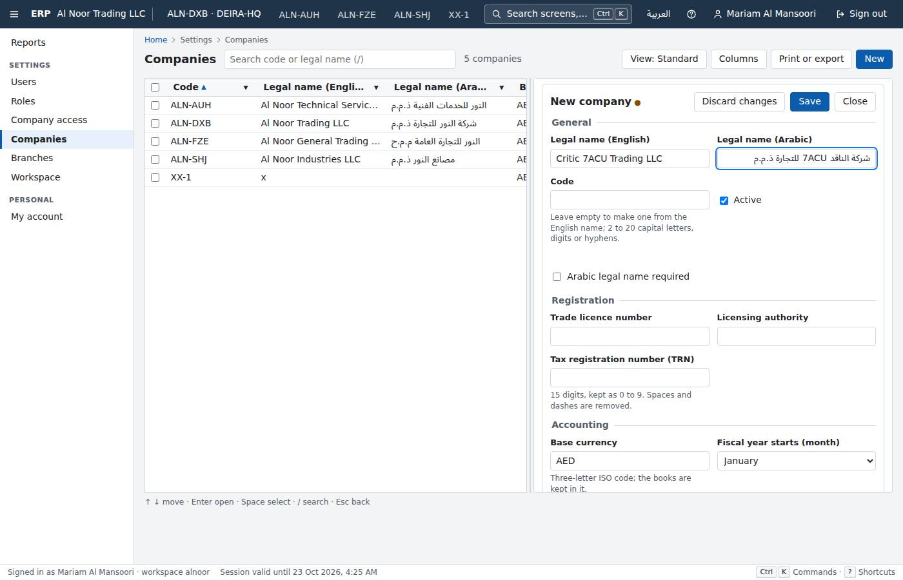
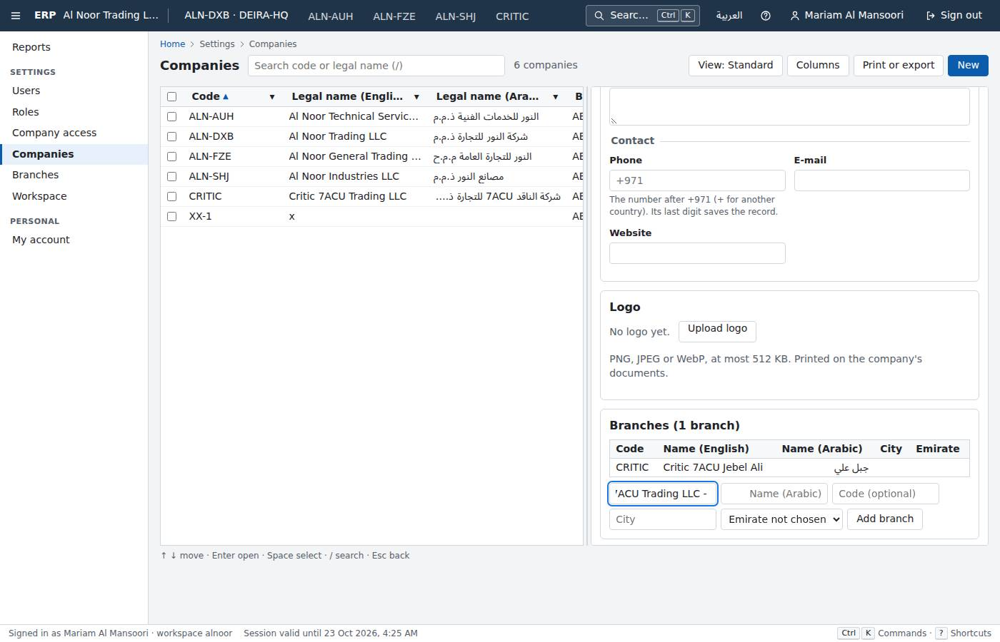
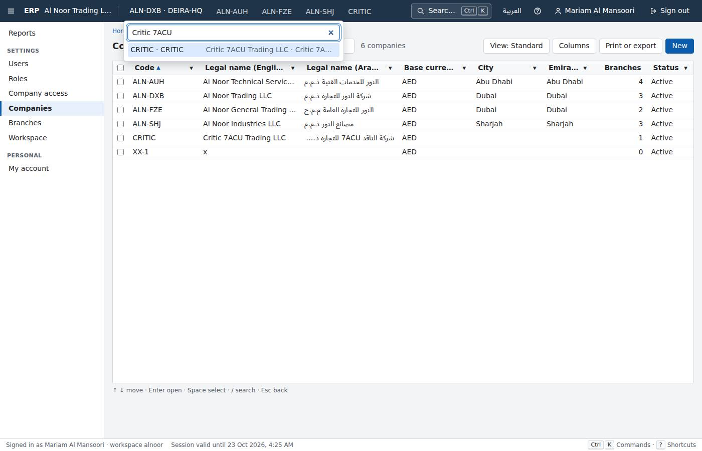
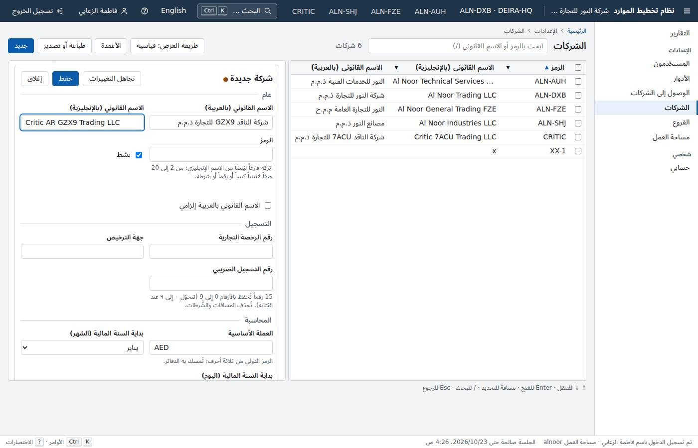
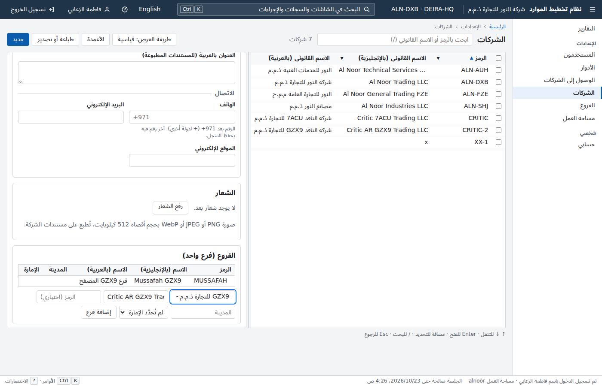
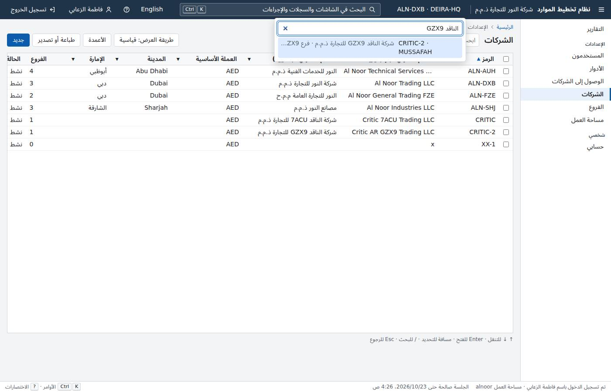
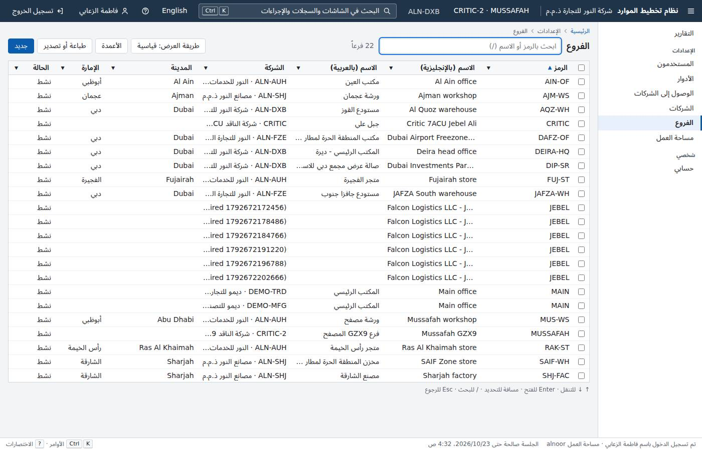
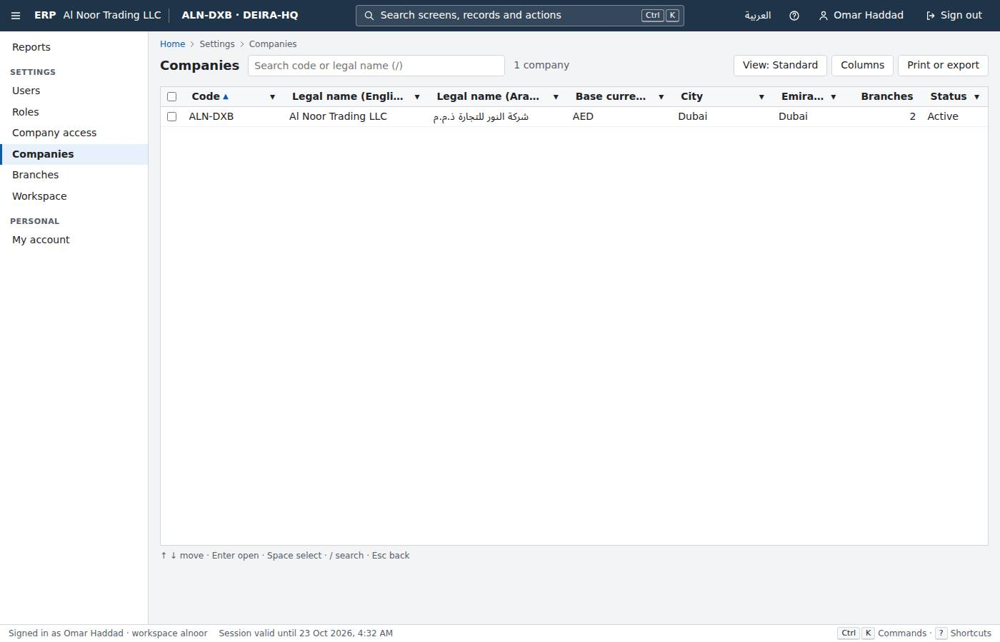
Round 13 · judged 2026-10-22T14:29:11Z · commit b033a15f
Users, roles and permissions
Wave 1 · 12 rounds judgedThis round added device approval to the user's Sign-in history tab. The form has a device code field, a 'Let it in' button and the palette command identity.users.approveDevice. In the shipped product it shows only when canUnblock holds (identity.users.update, and the user is within the caller's access). It works: screenshots 03 to 06, walks w2 in English and Arabic. Another tenant's admin gets 404, a helpdesk role is refused the Administrator, and a second fresh browser stays paused. But nothing checks the negative case, so the bar's 'screens hide what the user cannot do' is unguarded on this piece's newest screen. Remove `canUnblock &&` from canApprove and the form and its palette command are offered to a user who may only read the history (identity.signIns.read). Examples are an auditor or a branch supervisor, or an administrator looking at someone who also works in a company they do not. All 528 web unit tests pass anyway, including the identity screens' permission gate and the palette and keyboard sweeps. The identity plant self-test still reports 13 of 13 caught, and e2e shows nothing. The server refuses the submit, so this is not a hole today. But the next edit to HistoryTab can ship it unseen. Fix: - Add the device form and its command to the identity screens' permission gate. Render the History tab of a paused user (shared gateway, and a pending approval) for a user with users.read and signIns.read only, and for one whose target is refused. Assert no device code field, no 'Let it in' and no enabled identity.users.approveDevice in the palette. - Add this exact plant to scripts/identity-plant-self-test.mjs so the gate must catch it. - Also hide or reword the advice 'enter the device code their sign-in screen shows below' for viewers who have no form below (screenshot 11).
- G1 tenant isolation of the product as built (API, database role, exports, reports, jobs, files) PASS — No leak found. API attack (attacks/g1-attack-all.mjs, g1-a-vs-b-r13.txt, g1-run.log): alnoor's admin made 1,981 judged calls against gulfsteel on every OpenAPI route (114 operations, attacks/routes.txt), the new POST /api/identity/users/{id}/devices/approve and /me/devices/approve included. The calls used B's ids in paths and bodies, four tenant-switch headers, tenant query fields, every list export (CSV, XLSX unzipped, PDF; English and Arabic) and the reports with B's role and company ids. Result: 0 leaks, and B's state hash was the same before and after. Gulfsteel's admin approving an alnoor user's device answers 404 (attacks/device-approval.txt). Database as erp_app (attacks/db-app-role.txt): - no tenant bound: 0 rows; - bound to A: 100,005 users and 200,079 audit rows, 0 of B's; - UPDATE/DELETE of B's rows changed 0 rows, an INSERT for B was refused by RLS; - row_security=off, SET ROLE erp_owner/postgres/erp_auth and DISABLE RLS were refused; - all 17 tenant tables have RLS enabled and forced; - bound to A, writing B's device_approval_hash changed 0 rows, and verify_sign_in answers nothing. No jobs or files exist yet beyond the report endpoints, which the attack covered.
- G1 gate catches tenant leaks planted in this piece's surface PASS — Plants are in plants/r13-plants.diff. The run was the planted .NET gate and identity suites through verify-slot (plants/plant-run.sh, plant-inside.sh, run-server/gates.log). Both plants were live on a planted stack (plants/plant-demo.txt). - L1: GET /api/identity/users/{id} answers from a DI-singleton memo keyed by id only. Tenant A read B's user (200). It was caught by G1HttpIsolation (86 leaks), G1NonInterference and G1ProcessState ('singleton ...UserAnswerMemo.Items'). - L2: this round's DeviceApproval migration replaces identity.sign_in_attempts' tenant_isolation policy with USING (true). Bound to A, erp_app saw other tenants' rows. It was caught by both G1DatabaseIsolation tests ('tenant A sees 3 rows of other tenants'; the policy is not the standard one).
- G2 permissions of the product as built (restricted roles, escalation, screens hide) PASS — Walk w1 (screenshots 01 and 02): a user created by keyboard with the Read-only role (Alt+N, e-mail, Alt+O, 'read', Enter, Ctrl+Enter) signs in with the set-up code and chooses a password. They see no New user, Alt+N opens nothing, and their record is read-only with no Save. API calls with their session: POST users 403, POST roles 403. Escalation (attacks/escalate.txt), by a helpdesk role holding users and roles read/update/create, all refused with 403: - assign themselves Administrator, or Administrator in one company; - add permissions to their own role, create a role beyond their own, copy Administrator; - give others Administrator; - edit, deactivate, reset, sign out, unblock or delete the Administrator. New this round: letting a device of the Administrator in is refused 403 (userWorksBeyondOwnCompanies), and on oneself through the admin endpoint 403 (notOnYourself). Control for U1 below (walks/u1-check-real.txt, screenshot 11): a user who may only read the sign-in history is offered no device form.
- G2 gate catches actions with no permission check planted in this piece's API (devices/approve) PASS — Both plants were live on the planted stack (plants/plant-demo.txt), and both were caught (run-server/gates.log). - P1: POST /api/identity/users/{id}/devices/approve requires identity.profile.update instead of identity.users.update. An auditor without users.update let a device in (200). Caught by G2PermissionTests: 'declares identity.profile.update; the reviewed map identity.txt says identity.users.update'. - P2: the same endpoint skips TargetProblemAsync. The auditor let a device of the Administrator in (200). Caught by G1CompanyIsolation ('company X administrator -> POST .../devices/approve ... answered 200, expected a refusal'), the G2AccountTakeover tests and G1SignInThrottle (approving oneself answered OK, expected Forbidden).
- G2 gate catches a screen offering an action the user cannot do, planted in this piece's own new screen (screens hide what the user cannot do) FAIL — Plant U1 was MISSED. The plant is one line in web/src/modules/identity/UserPanel.tsx HistoryTab (plants/r13-plants.diff): `const canApprove = canUnblock && (sharedPaused || !!history?.deviceApprovalUntil)` loses `canUnblock &&`. It is live. A user whose role grants only identity.users.read and identity.signIns.read opens a paused user's Sign-in history. The planted screen offers them 'Let a device sign in': the device code field, the 'Let it in' button and the palette command identity.users.approveDevice (screenshot 10). The shipped product offers none of it (screenshot 11, walks/u1-check-*.txt). Nothing caught it: - The web unit suite passed 528/528 with the plant (plants/web-U1-planted-full.log). That suite includes the identity screens' permission gate and the palette and keyboard sweeps, and the identity plant self-test still reports '13 plants, all caught'; none of those plants is this one. - The e2e suite against the planted stack passed 111 and failed 2 (plants/e2e-planted.log). Both failures came from L1's stale memo: an edited e-mail and a language read back old. Neither is about the device form. - The only device-form tests are positive (screens.test.tsx 'lets one device in...', sign-in.spec.ts:132).
- G3 clean clone: ./erp verify (build, migrate, seed, every test) PASS — Fresh clone of 047f1920. Run 2: 'verify passed in 3259 s' timed from 'slot taken' at 09:52:16Z; processor time 9,559 s against a maximum of 10,500. Counts: .NET 732, web unit 528, e2e 113, compare 447, build 6, each at its ratchet minimum (verify-critic-p03-identity-r13-run2.log). Run 1 (slot taken 08:07:43Z) had every test green, but the ratchet failed on processor time: 10,891 s against 10,500. Load reached 83.59; another critic's verify and my own demo, comparison runs and planted e2e stack ran beside it (verify-critic-p03-identity-r13-run1.log, verify-run1-failed-ratchet/). The integrator's alone run used 9,135 s. Re-run when quieter: passed.
- G3 clean clone: ./erp up (running seeded demo) PASS — Fresh clone, ERP_PROJECT=c-p03-identity-r13 ERP_HTTP_PORT=20350 ERP_DB_PORT=20351 ./erp up. The demo was running in 72 s with 100,005 users (erp-up.log); the ports and project overrides were honoured. With ERP_SEED_USERS_CSV it took 77 s (erp-up-dataset.log).
- Rule gates (licences, no float money, EN/AR string parity, audit coverage) and the ratchet PASS — These ran inside verify run 2, and the ratchet passed with every count at or above its minimum. The counts rose from round 12's 701/524/111/415 to 732/528/113/447. Device approvals leave audit rows that name the actor (audit.entries, table users, device_approval_hash/until old and new).
1826 / 1826 passed
0 failed · 0 skipped · 3259s
Clean clone → demo: PASS in 3259s
| Task | Ours | Odoo | Winner |
|---|---|---|---|
| create-restricted-user (named) | 5 · 37 · 1.918s · 20.91s | 10 · 46 · 11.532s · 30.05s | ours |
| find-user (find one user among 100,000) | 3 · 3 · 0.867s · 8.29s | 6 · 5 · 2.381s · 10.35s | ours |
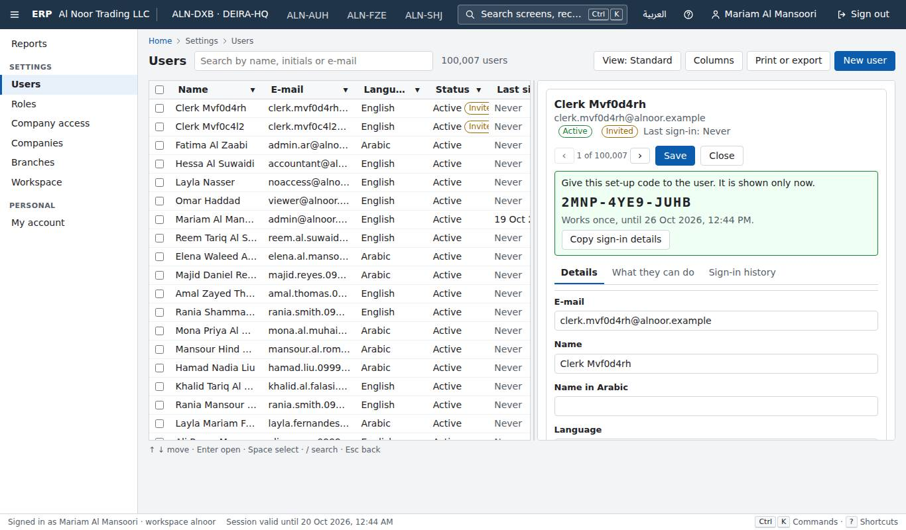
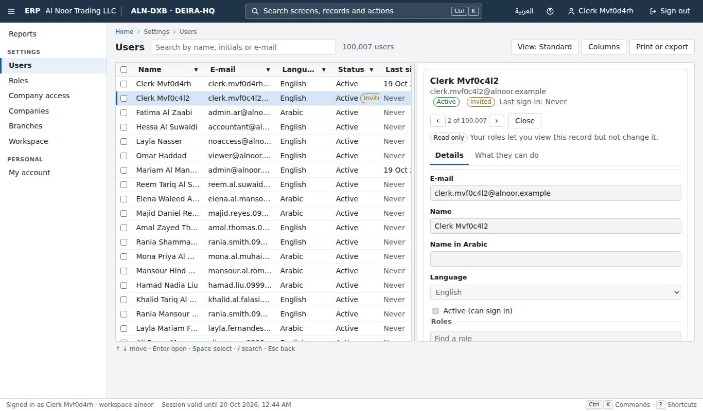
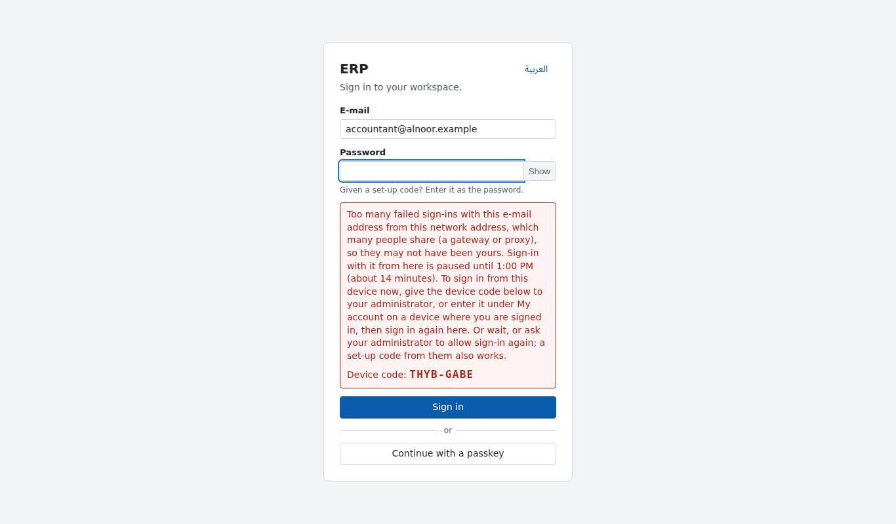
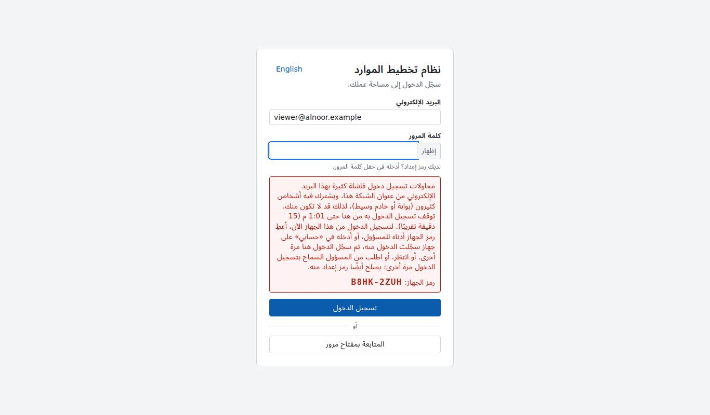
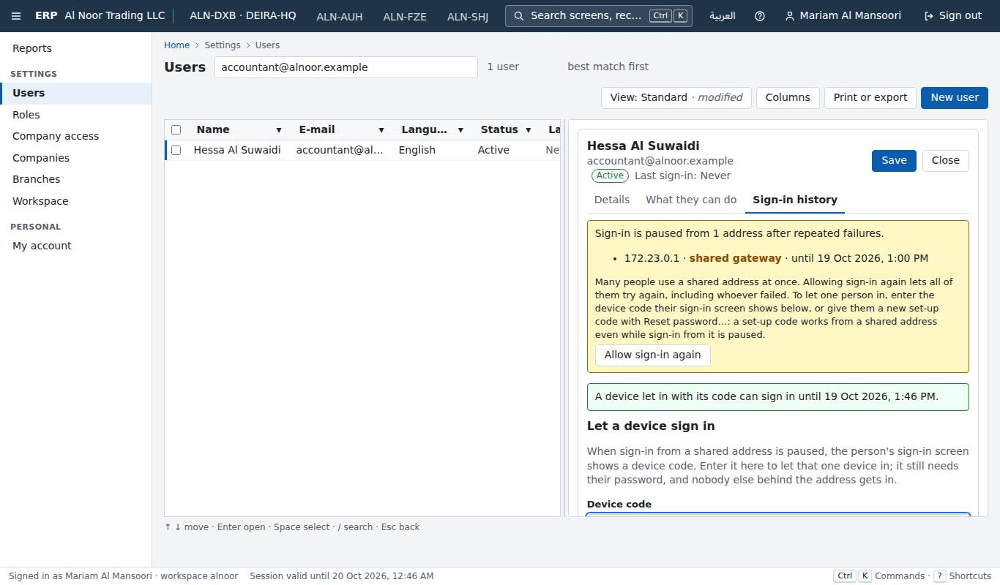
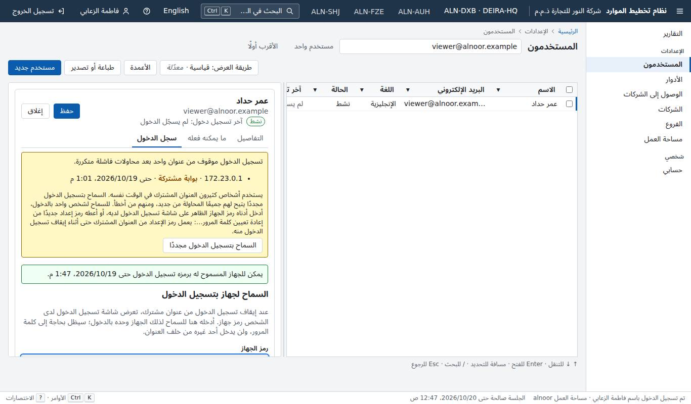
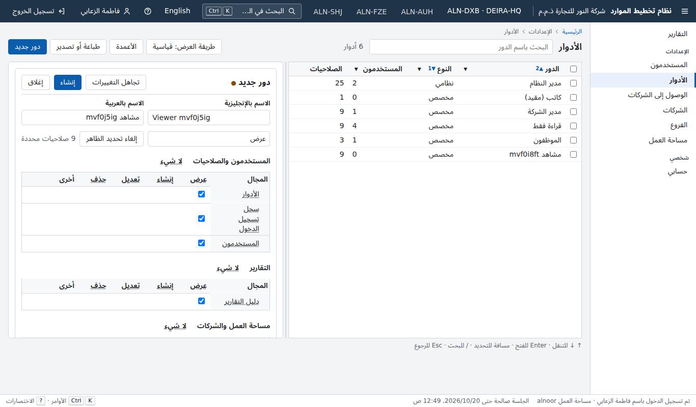
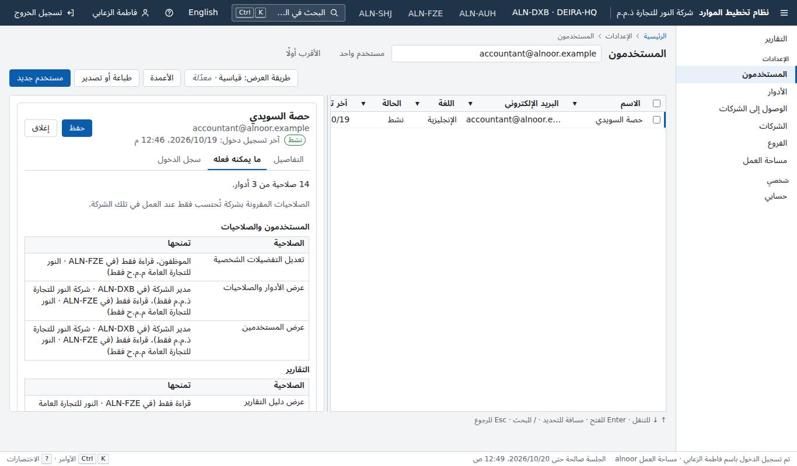
Round 13 · judged 2026-10-19T10:46:52Z · commit 047f1920
English/Arabic app shell
Wave 1 · 10 rounds judgedThe shell keeps a few keys on the device across sign-out by design: the language ('erp.language') and the digits. G1 judges them two ways. The static G1ClientState gate counts carrier uses and module-level state. The browser journey in tests/e2e/specs/client-isolation.spec.ts takes tenant B through every menu screen, the palette, a record and the dialogs, then judges A's tab. But that journey never presses Alt+L, the top-bar language button or the digits switch while B's data is on screen. Nothing therefore checks what a reviewed device key holds after the shell's main action has run. I planted CL3b: the existing getItem and setItem of 'erp.language' also carry the record address the language was switched on, and after the next sign-in the shell opens it. It adds no new storage call and no module-level state. It passed the web unit suite (537 of 537), G1ClientStateTests and the whole e2e suite, the client-isolation spec included. At run time it is a real cross-tenant leak: Gulf Steel's admin, signing in on the tab Al Noor's admin left, is put on Al Noor's user record address with Al Noor's e-mail in the search box. Under the round rules, a gate that misses a fault planted in this piece's surface fails the round. On a shared shop-floor or front-desk PC at a UAE trading company, this is exactly how one company's customer or staff details would show up in another's session. Fix: in the browser G1 journey, have B switch language and digits (Alt+L, the digits action, My account) while one of B's records is open, before signing out. Judge every device-kept key's value against B's markers after sign-out and on A's every step, as localStorage already is. Add a value check for the device keys: 'erp.language' may hold only en or ar, and 'erp.numerals' only latn or arab, so anything else fails. Add CL3b as a self-test plant.
- G1 tenant isolation of the product (my own attacks) PASS — isolation-probe.txt (drivers/isolation_probe.py). Signed in as admin@alnoor.example, I sent 1,834 requests at Gulf Steel. They covered every documented GET with B's 30 ids and codes in the route, tenant query fields and X-Tenant headers, and 802 writes (every documented PUT/POST/DELETE with B's ids in the route and body). They also covered exports of 5 lists as pdf, csv and xlsx with tenant parameters. None of B's 33 markers appeared, and no write on a B id succeeded. B's own views were unchanged, except /api/tenancy/workspace, which is a 404 on a path that does not exist and whose traceId varies. db-rls.txt: all 17 tenant tables have row-level security enabled and forced. erp_app is neither superuser nor BYPASSRLS. With no tenant context, erp_app sees 0 users, 0 audit rows and 0 sessions. With A's context it sees 100,005 users and 0 of B's, and an UPDATE of B's rows touched 0 rows. The only tables without tenant_id are migration histories and the two reviewed sign-in tables, which erp_app cannot read. shared-device-product.json: on the unplanted product, B's tab after A's sign-out opens Home with nothing of A.
- G1 gate self-test on this piece's surface (plants) FAIL — plants/plants-summary.txt. Plant CL3b (plant-client-CL3b-last-record-in-device-language-key.diff) was MISSED by every gate. It makes the device's reviewed language key ('erp.language', kept across sign-out by design) also hold the record address on which the language was last switched, and the shell opens that address after the next sign-in. It adds no new storage call and no module-level state. Results: the web unit suite passed 537 of 537. G1ClientStateTests (carrier inventory and module-level state) all passed (plants-S3-gates.log). On the planted stack the whole e2e suite passed 116, including the browser G1 client-isolation spec. Its one failure is forms-reports 'a report longer than the screen', which needs more than 2,000 users and fails on any 1,000-user stack (plant-CL3b-e2e-all.log). The leak is real at run time (plant-CL3b-runtime-leak.json, 11-plant-CL3b-tenant-b-tab-opens-tenant-a-record.jpg): Gulf Steel's admin, signing in on the tab Al Noor's admin left, lands on /identity/users/<Al Noor user id>?q=accountant%40alnoor.example, with Al Noor's e-mail in the search box. Caught on this piece's surface: SL1, round 11's miss, now caught 3 ways (runtime G1ShellAnswers, G1NonInterference, static G1OutsideProcessState). SL2 (learned digits per language, from any tenant) caught by G1NonInterference and G1OutsideProcessState. CL3 with a module-level variable caught by G1ClientState's module-state check. FR1 (round 11's palette fix undone) caught by 4 web tests.
- G2 permissions (product and plants on this piece's surface) PASS — SP2 (plant-server-S2-SP2-...diff) declares identity.profile.update as metadata on PUT /me/preferences, but its policy only requires signing in. CAUGHT: the host refuses to start ('declares identity.profile.update but no authorization policy on it requires that permission'), and all 37 G2PermissionTests and G2WriteSetTests fail (plants-S2-SP2-gates.log). SP3 (plant-server-S2b-SP3-write-outside-set.diff): switching to Arabic also writes display_name_ar. CAUGHT by G2WriteSetTests.Each_permission_writes_only_its_reviewed_tables_and_columns (plants-S2b-SP3-gates.log). Product (roles-ui.json): noaccess has no navigation and no palette 'New' actions, its Alt+L switches on the device only with no PUT, and a deep link to /identity/users/new shows 'No access'. viewer gets no 'New' actions.
- G3 clean clone: one command builds, migrates, seeds and passes all tests; one command runs the demo FAIL — Fresh clone at 9140b150, run through the slot script. Slot 1 was taken at 2026-10-22T10:32:58Z after an 8,625 s wait, and the run took 4,674 s from the slot. './erp verify' exited 1: 'verify stages failed: web'. One comparison-harness unit test failed (gauntlet/compare/test/causation.test.mjs, 'control (round 13): a click that asks over a web socket ... verify': 'xsite: action outside the clock (set-up) ... ScheduleStyleRecalculation: a DevTools command outside any step'). The other stages passed: .NET 730 of 730 (the timing stage did not run, because the web stage failed), web unit 537 of 537, build 6 of 6, compare 485 of 486, e2e 117 of 117. Processor time: dotnet 5,303 s, web 1,984 s, e2e 475 s. The load peaked near 79 from other agents. Run alone afterwards, the same test passed 4 times in 4 at a load of 43 to 46 (causation-rerun.txt), so it looks load-dependent. It still failed in the one-command run. './erp up' served the seeded demo (100,006 users) in 67 s (up.log).
- Rule gates (licences, decimal money, EN/AR string twins, accessibility, audit) PASS — Inside the verify: 'String check passed: 80 source files, 813 keys in English and Arabic, 80 plural messages' and 'Accessibility check passed: 1142 JSX elements checked'. The .NET licence gates (NuGet, npm, fonts) passed. axe-core WCAG 2 A/AA found 0 violations on sign-in, home, users, a user record, the palette and the help sheet, in English and in Arabic (axe.json). db-audit-preferences.txt: every language switch wrote an audit.entries row with actor, time, record and old/new values.
1875 / 1876 passed
1 failed · 0 skipped · 4674s
Clean clone → demo: FAIL in 4674s
| Task | Ours | Odoo | Winner |
|---|---|---|---|
| switch-to-arabic | 1 · 0 · 0.176s · 2.65s | 6 · 1 · 1.827s · 15.28s | ours |
| reach-screen-keyboard | 2 · 2 · 0.148s · 3.66s | 3 · 8 · 0.703s · 3.99s | ours |
| open-third-user-keyboard (critic-added r2, kept) | 6 · 6 · 0.21s · 6.13s | 8 · 13 · 1.117s · 6.74s | ours |
| new-user-keyboard (critic-added r7, kept) | 3 · 4 · 0.192s · 2.87s | 4 · 10 · 0.875s · 5.9s | ours |
| keyboard-navigation (open the third contact by keyboard) | – | 9 · 10 · 0.786s · 7.25s | not-compared |


Round 12 · judged 2026-10-22T11:57:24Z · commit 9140b15061
List and search framework
Wave 1 · 7 rounds judgedp05's list component is the screen every later 100,000-row list uses (Contacts, invoices, stock). Its natural next optimisation is to show the last answer at once while a slow query loads. If it keeps that answer in the origin private file system (navigator.storage.getDirectory), no gate notices. The G1ClientStateTests carrier patterns cover cookies, window.name, history, localStorage, sessionStorage, IndexedDB, caches, service workers and BroadcastChannel, but not navigator.storage or getDirectory. forgetIdentity() clears storage, IndexedDB, Cache Storage and cookies but never the private file system. The client-isolation e2e judges 12 carriers, and this is not one of them. Its heap snapshot misses the data because the cached rows are replaced and collected once the fresh page arrives. The result is a real cross-tenant leak on shared devices, the outsourced-bookkeeper case the product names. The signed-out device keeps the previous tenant's rows, and the next tenant's list opens on them while the network is slow. Fixes: (a) add navigator.storage, getDirectory, FileSystemHandle, createWritable and storage.persist (and the File System Access API) to the G1ClientStateTests carriers, with a planted self-test; (b) make forgetIdentity empty the origin private file system (getDirectory, then removeEntry with recursive for every entry) and add a Clear-Site-Data: "storage" header to the sign-out answer; (c) add an 'opfs' carrier to client-isolation.spec.ts and its judges' self-test, and have the e2e signed-out step check that the origin's whole storage is empty, using navigator.storage.estimate as well, not a fixed list of APIs.
- G1 tenant isolation (live attack on the product as built) PASS — On the clean clone's demo (100,005 alnoor users, 1,005 gulfsteel users) I signed in as admin@alnoor and attacked gulfsteel. attack-api-lists.txt: GET, PUT and DELETE on B's personal and shared view ids through both views/{id} and shared-views/{id} all answered 404, and B's views kept their versions. Searches and filters for gulfsteel returned total 0. B's keyset cursor returned only A's rows. Group sums equalled A's total. The filtered CSV export held no gulfsteel row, and tenant headers got 401 without a session. attack-sweep-get.txt: 523 GET calls covered every GET route in the OpenAPI document. They used B's user, role, company, branch, access and view ids as path ids and as company/role parameters, plus B's search terms, filters and cursor, in JSON and CSV. That found 0 leaks across 217 markers. db-inspect.txt: erp_app is not superuser and has no BYPASSRLS. As erp_app with no tenant set, identity.users and lists.saved_views return 0 rows. lists.saved_views has forced RLS. pg_class estimates and pg_stat_user_tables are refused.
- G1 gate catches tenant leaks planted in p05's surface FAIL — I planted L14 (L14-list-first-page-kept-in-origin-file-system.patch, 44 lines in p05's web/src/kernel/lists/useListRows.ts). It writes each list query's first page to the origin's private file system (navigator.storage.getDirectory), keyed by endpoint and query only, with no tenant or user. It shows that page right away while the fresh page loads. Every client gate missed it: G1ClientStateTests passed 4 of 4 (run-plants-L13-P13-L14-gates-all.log), the web client-isolation unit tests passed, and the e2e specs/client-isolation.spec.ts passed 5 of 5 against a planted stack (run-L14-e2e-client-isolation.log). Live (plant-live-L14.txt): gulfsteel's admin opens Users and signs out. The signed-out screen's origin file system still holds a 34 KB file with 100 @gulfsteel e-mails. Alnoor's admin then signs in in the same browser. With a 3 s API delay, Users opens on 32 rows, all gulfsteel users, labelled '1,005 users' (10-plant-L14-second-tenant-sees-first-tenants-users.jpg). Regression from round 12: plant L13 is now caught by G1OutsideProcessStateTests, G1TenantSourceTests and, dynamically, G1ListVolumeTests (3 m 35 s).
- G2 permissions (product, and gates on planted faults in p05's surface) PASS — Plant P13 (P13-personal-delete-removes-shared-view.patch) lets the personal DELETE /views/{id} route remove shared views. G2PermissionTests.Every_list_endpoint_needs_the_lists_own_permission_and_shared_view_writes_need_sharing catches it: 'DELETE /api/lists/tenancy.companies/views/{id:guid} answered 204 to a reader ... for the workspace's shared view'. Plant P14 (P14-bulk-actions-offered-without-permission.patch) offers bulk actions without their permission. 3 web tests fail on it, among them 'offers no state change to a user who may not update users' and the keyboard sweeps of /identity/users. Round 12's P10 now fails ListView.test 'offers a reader who may not share no change to the workspace's shared view'. Live in the browser: the viewer's Views menu offers only 'Save as a new view…', with no share box and no Update or Delete on the shared default. The selection bar offers Copy only (ui-views.txt).
- G3 clean clone (one command: build, migrate, seed, all tests) FAIL — The verify ran through verify-slot.sh. The slot was taken at 18:05:53Z after a 3,945 s wait, and the run ended at about 19:11Z, 3,922 s later. It exited 1 on stage web. One compare-harness unit test failed: test/measured-part.test.mjs:158 'control C4 (routed, p00 r10): a save still under way while the page changes its address stays on the clock and verifies'. It came out 'invalid' where 'verified' was expected: 'a DevTools command outside any step ... 1.203 s before the clock started'. Every other test passed: .NET 758/758, web vitest 543/543, build 6/6, compare 485/486, e2e 120/120. The timing and ratchet stages did not run. Processor time for the three stages was 7,665 s (dotnet 5,249, web 2,003, e2e 414). ./erp up from the clone served the seeded demo in 92 s (later restarts took 70 s and 48 s).
- Rule gates (licences, money, EN/AR strings, audit, list indexes) PASS — They run inside the .NET stage, which passed (758 tests); the web string check passed. No dependency changed since round 12. lists.saved_views carries the audit_capture trigger and created_by/updated_by. identity.users has trigram GIN indexes on display_name, email_normalized and display_name_ar, and (tenant_id, column, id) btree indexes (db-inspect.txt).
1912 / 1913 passed
1 failed · 0 skipped · 3922s
Clean clone → demo: FAIL in 3922s
| Task | Ours | Odoo | Winner |
|---|---|---|---|
| find-user (find one user among 100,000; p16 Contacts is not built, so the dataset's 100,000 users) | 3 · 3 · 1.481s · 8.29s | 6 · 5 · 3.014s · 10.35s | ours |
| open-third-user-keyboard (open a record from the list by keyboard only) | 6 · 6 · 0.327s · 6.13s | 8 · 13 · 1.381s · 6.74s | ours |
| find-record (find one contact among 100,000) | – | – | not-compared |


Round 14 · judged 2026-10-22T19:12:43Z · commit 9e3380e0
Form and report framework
Wave 2 · 9 rounds judgedThis round fixed round 8's gap. PDFs, CSVs and workbooks now hold the whole selection (100,005 users: a 3,847-page Arabic PDF in about 22 s), and the screen offers 'Print all rows (PDF)' and Ctrl+P. For a UAE trading or manufacturing company these long files are how data leaves the system: price lists, stock lists and statements go to auditors, free-zone authorities and customers. The code path only runs when a document holds more rows than the screen (ReportLimits.ScreenRows, 2,000). No gate ever reaches that path. G1HttpIsolation, G1BranchScope, G2ReportData and G2CompanyRole run on environments with about 25 users per tenant. G1ListVolumeTests has 100,000 users per tenant but never prints, and G1PrintFileTests looks only for erp-print-* files in the top of /tmp. Every gate therefore tests the small-document branch only. Two real faults confined to big files passed all 193 gate tests and all 64 report tests. L12c is a 10-minute PDF spool keyed on the document, not the tenant, so Gulf Steel receives Al Noor's 100,005-user PDF. P17 is a whole-selection file that names roles to a user who gets 403 on roles. The same two faults at every size are caught (L11: 1,026 leaks; P17u: G2ReportData and G2CompanyRole). This is the same class of blind spot as p05 round 9's L12, where a gate fixture was smaller than the code's threshold. Needed: (1) G1: tenant B prints every printable list and report as a whole-selection file (pdf, csv and xlsx, en and ar, with the documented parameter combinations), before and during A's attack. A then asks for the same requests and is judged as now. This can run on a host with Erp:Reports:ScreenRows below the fixture's row counts (for example 3), or at the volume fixture. (2) G2ReportData and G2CompanyRole: the same, for every permission set. (3) Look for print/spool files anywhere under the temp folder, not only erp-print-* at its top. (4) Plant-test with L12c and P17.
- G1 tenant isolation (product as built) PASS — Every G1 test passed inside verify (gate project 193/193). I attacked the seeded demo myself through the API, signed in as Gulf Steel against Al Noor (tools/attack.mjs, api/attack-print-surface.txt). I sent 10,208 requests: every report and printable list in json/csv/xlsx/pdf and en/ar, with Al Noor's company, branch, role and user ids in every matching parameter, 'Noor' text, disposition=inline, numerals=arab with timeZone, groupBy, and tenant/tenantId/companyId fields. Headers were none, X-Tenant-Id, X-Company-Id, X-Branch-Id and X-Workspace. I also sent GET and PUT to each Al Noor company. Result: 0 leaks and 0 victim rows changed. The database (api/db-rls.txt): erp_owner, erp_app and erp_auth are neither superuser nor BYPASSRLS, and all 17 tables with tenant_id have RLS enabled and forced. New file path: no erp-print-* file is left in the app container's /tmp after 100,000-row prints. Four whole-list PDFs at once kept tenant B's list calls under 70 ms (api/noisy.txt).
- G1 catches a leak planted in p06's surface FAIL — Plant L12c (plants/plant-L12c-P17-whole-selection-files.diff, ReportEndpoints.Output) adds a disk spool for PDFs longer than the screen. The spool lives in /tmp/erp-pdf-spool for 10 minutes and is keyed on the document's key, language, numerals, groupBy, parameters, columns and file limit, but not on the tenant. Any PDF request is answered from it first. Live on the planted stack with the shared dataset (plants/live-L12c.txt): Al Noor prints /api/reports/lists/identity.users?format=pdf&language=en (100,005 users). Gulf Steel then asks for the same URL and receives the identical 9,543,087-byte PDF of Al Noor's users. Gate run (plants/run-L12c-P17.log, toolbox image, 54 min): Erp.Gates.Tests 193 of 193 passed, and Erp.Modules.Reports.Tests 64 of 64 passed. Control (plants/plant-L11-P17u-controls-every-size.diff, run-L11-P17u-controls.log): the same spool applied at every size is caught. G1HttpIsolation found 1,026 leaks and G1BranchScopeAttack found 10. So the gates are blind only to documents longer than the screen's 2,000 rows, which is exactly the path this round added. Each gate tenant holds about 25 users, and G1ListVolumeTests (100,000 users per tenant) never prints. Note: my first form of the plant (L12, keyed on the raw query string) was caught only by the static request-enumeration rule (G1TenantSourceTests and G1HttpIsolation's input check), not by any behavioural check (plants/run-L12-P17.log).
- G2 permissions (product as built) PASS — All G2 tests passed inside verify. In the browser (browser/explore-r9.log), the viewer's company form has 21 of 21 fields disabled and no Save button; typing 971505550199, then Enter, Ctrl+S and Alt+Z, sent 0 writes. I created a clerk role through the API holding identity.users.read and reports.catalog.read only. Its holder gets 403 on /api/identity/roles. On the unplanted product the clerk's prints carry no role names (shown on the planted stack by the JSON and the control).
- G2 catches permission faults planted in p06's surface FAIL — Plant P17 (same diff, ReportEndpoints.PrintListAsync/NamesAsync) skips the caller.Has(roles list permission) check when naming another list's records, but only in a whole-selection file (rows > ReportLimits.ScreenRows). Live (plants/live-P17-on-L12c-stack.txt, also live-P17.txt): the clerk who gets 403 on roles prints the users list as CSV (100,005 rows), and the file names roles 'Administrator', 'Read-only' and 'Staff'. Its JSON names none. Every G2 test passed with P17 planted (run-L12c-P17.log: 193/193; Reports tests 64/64). Control P17u, the same fault at every size, is caught by G2ReportDataTests, G2CompanyRoleTests and both ReportPrintSelfTests (run-L11-P17u-controls.log). G2ReportData never prints more rows than the screen holds.
- G3 clean clone FAIL — Fresh clone at fe7e8d79, project c-p06-form-report-r9, ports 20650/20651 (verify 20660/20661), all set through the documented ERP_* variables. `./erp verify` ran through verify-slot.sh: the slot was taken at 03:38:21Z after 3,495 s of queueing. It ended 'verify FAILED (exit 1)', web stage, after about 5,420 s. One comparison-harness test failed: test/guard.test.mjs:427 'plant H2 (round 3)' hit 'waitForFunction: Timeout 10000ms exceeded' and ran for 13.2 s, with load up to 70. It passes alone at load 15 (rerun-compare-H2.log). The .NET stage passed (722 tests), and so did e2e (112) and the ours-driver health check. The timing stage did not run. Demo: `ERP_SEED_USERS_CSV=… ./erp up` gave a running, seeded demo in 74 s (up.log).
- Rule gates (licence, money, strings, audit) PASS — Inside verify the gate project passed 193/193 and web unit 525/525, licence, money, string and accessibility checks included. The form's phone saves and Alt+Z undo send PUTs that the audited company endpoint takes, as in round 8.
1779 / 1780 passed
1 failed · 0 skipped · 5420s
Clean clone → demo: FAIL in 5420s
| Task | Ours | Odoo | Winner |
|---|---|---|---|
| edit-and-save | 2 · 12 · 0.282s · 6.41s | 3 · 12 · 0.547s · 10.28s | tie-accepted |
| print-list-arabic | 3 · 13 · 0.748s · 11.09s | 5 · 32 · 7.236s · 19.06s | ours |
| arabic-report | 2 · 0 · 0.217s · 5.3s | 6 · 0 · 5.626s · 15.9s | ours |

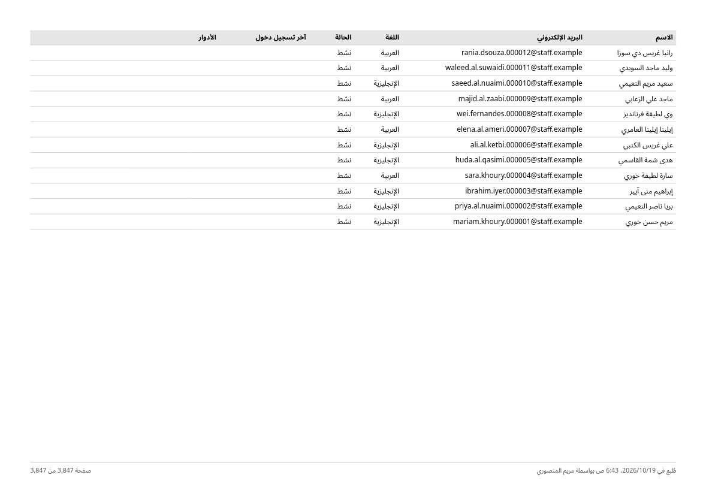

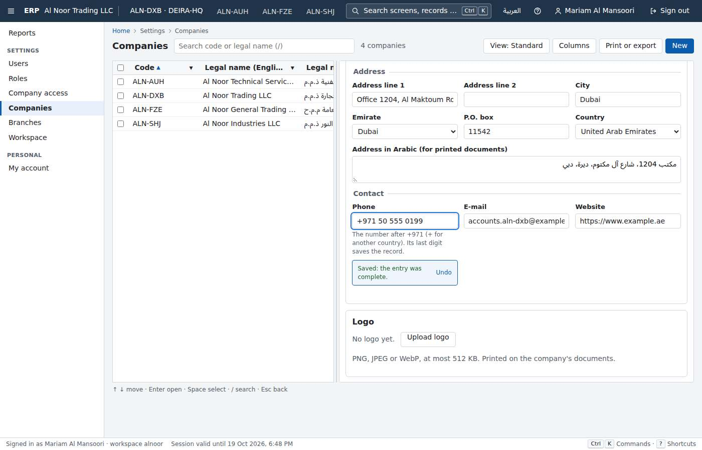

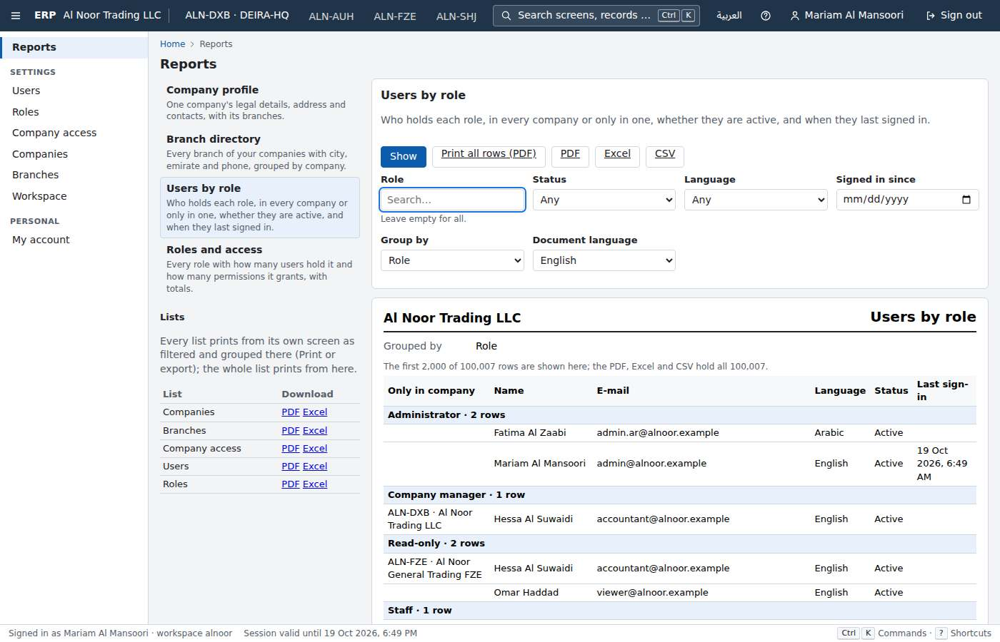

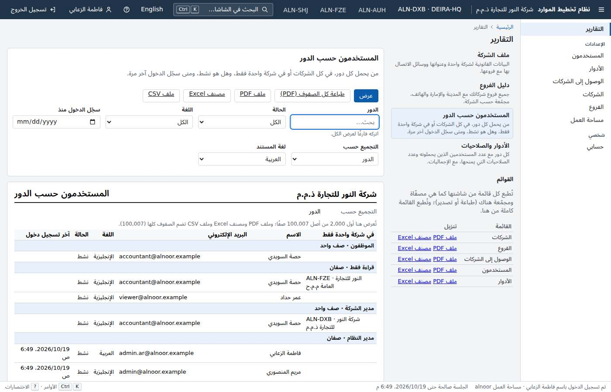

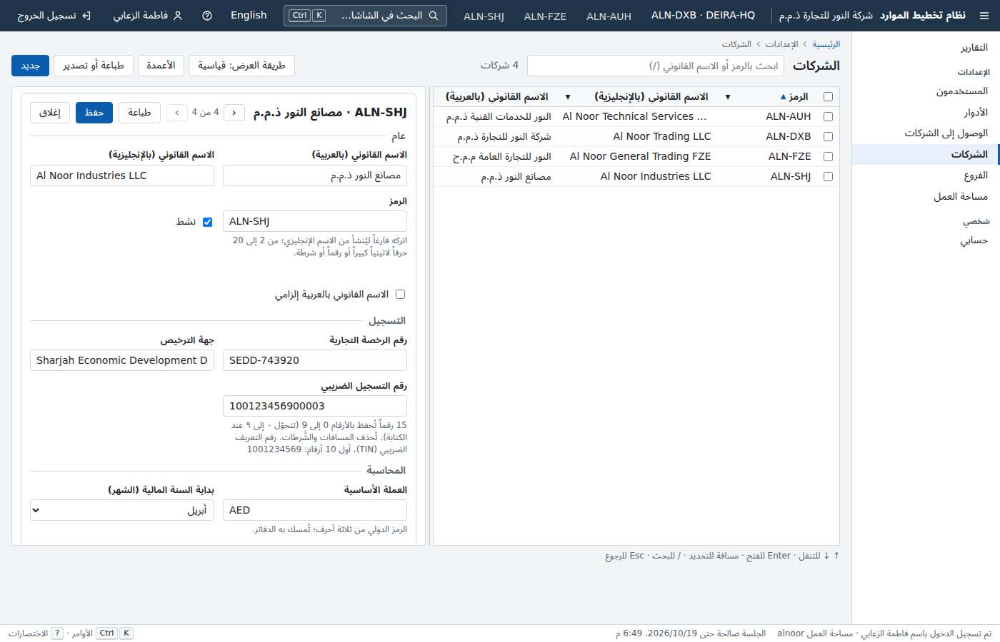

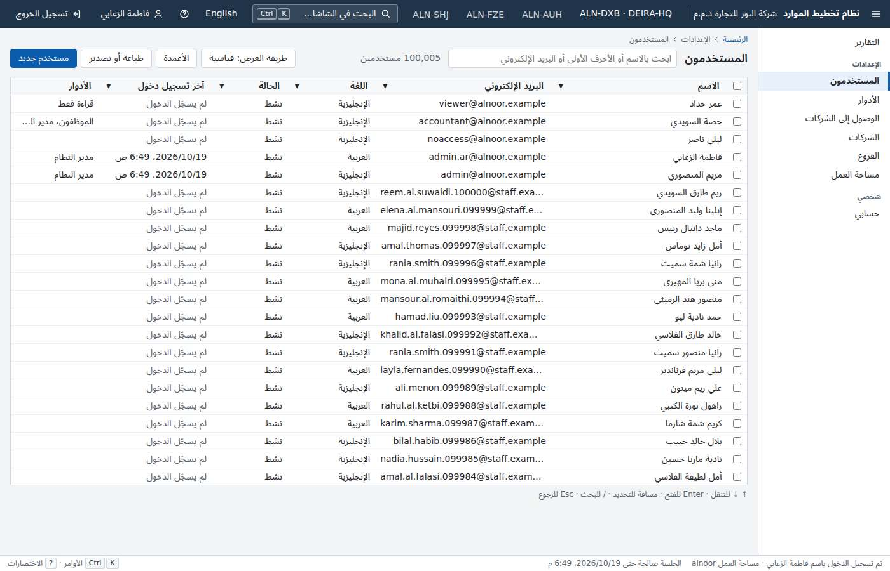

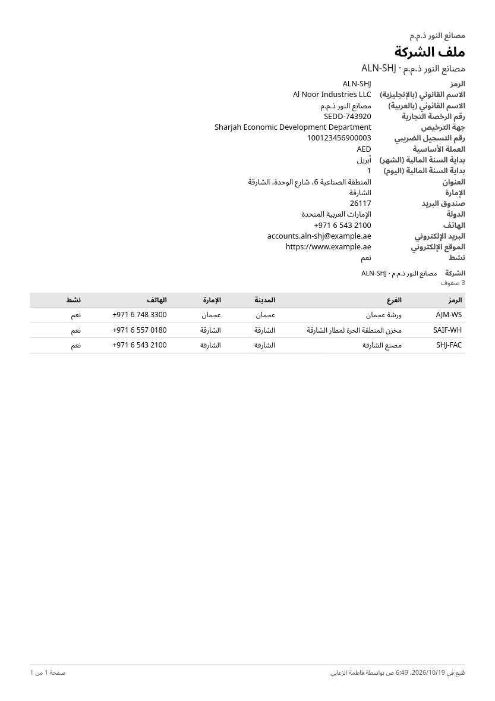

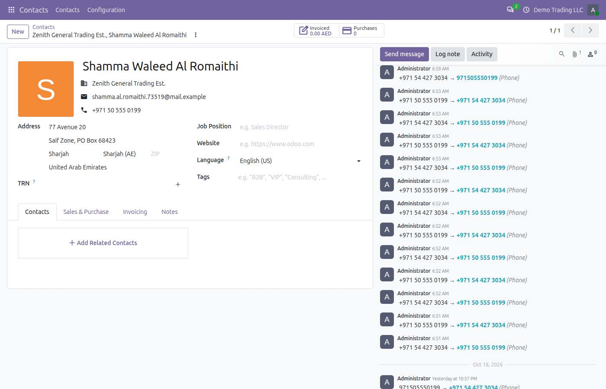
Round 9 · judged 2026-10-19T05:16:04Z · commit fe7e8d7927
Audit trail
Wave 2 · 0 rounds judgedWaiting for its first critic.
Multi-currency
Wave 2 · 0 rounds judgedWaiting for its first critic.
Tenant-defined custom fields
Wave 2 · 0 rounds judgedWaiting for its first critic.
Document numbering
Wave 2 · 0 rounds judgedWaiting for its first critic.
Attachments
Wave 2 · 0 rounds judgedWaiting for its first critic.
Background jobs
Wave 2 · 0 rounds judgedWaiting for its first critic.
Approval flows
Wave 3 · 0 rounds judgedWaiting for its first critic.
Import and export
Wave 3 · 0 rounds judgedWaiting for its first critic.
Documented API for everything
Wave 3 · 0 rounds judgedWaiting for its first critic.
Shared Contacts directory
Wave 2 · 0 rounds judgedWaiting for its first critic.